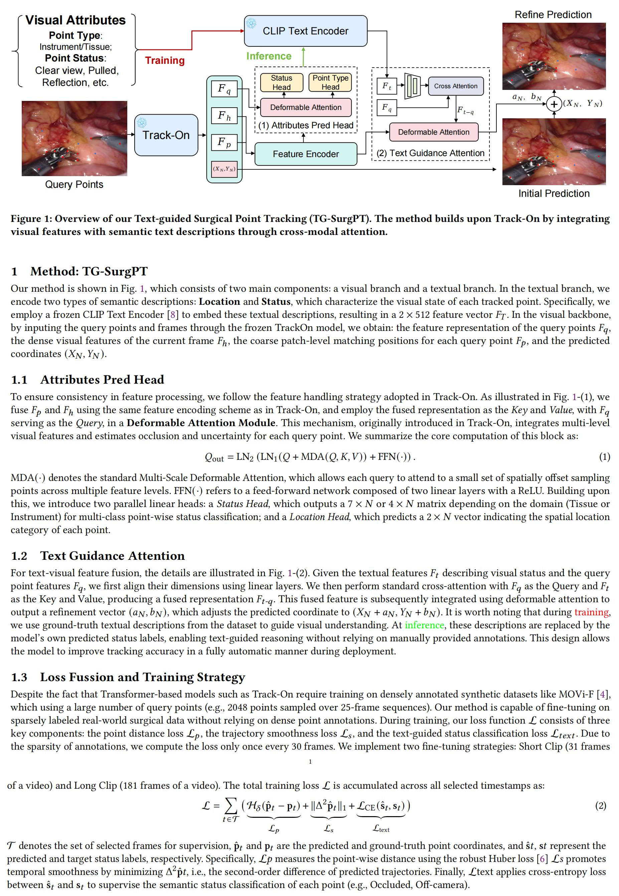
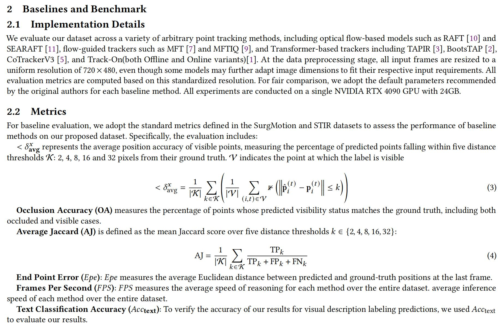
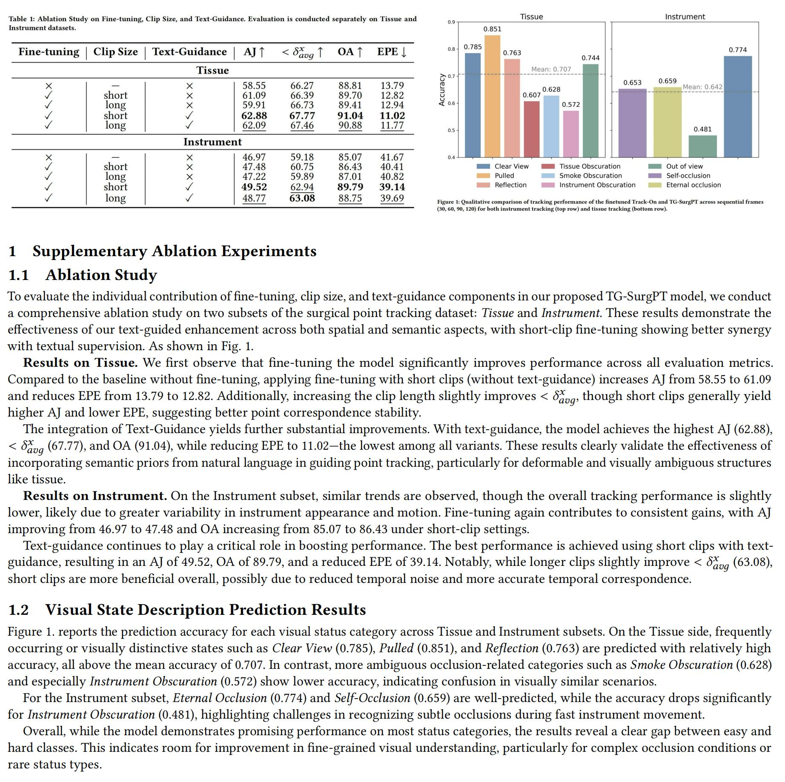

VL-SurgPT: Bridging Vision and Language for Robust Surgical Point Tracking
Abstract

Accurate point tracking in surgical environments remains challenging due to complex visual conditions including smoke occlusion, specular reflections, and tissue deformation. Current surgical tracking datasets provide only visual coordinates, lacking semantic descriptions of why tracking fails under specific conditions. We present VL-SurgPT, a comprehensive multimodal dataset that bridges visual tracking with textual descriptions of point status. The dataset comprises 908 in vivo video clips, including 754 for tissue tracking (17,171 annotated points across five challenging scenarios) and 154 for instrument tracking (covering seven instrument types with detailed keypoint annotations). We establish comprehensive benchmarks using eight state-of-the-art trackers and propose TG-SurgPT, a text-guided tracking method that leverages semantic descriptions to improve robustness. Experimental results demonstrate significant improvements in tracking accuracy, particularly under adverse visual conditions where traditional methods struggle. This work represents the first large-scale vision-language dataset for surgical scene tracking, enabling development of semantically-aware tracking systems for computer-assisted surgery. Further details and visualizations are available at: https://szupc.github.io/VL_SurgPT/.
Dataset Introduction

Annotation Workflow
The video above shows how we work with doctors to annotate 1fps videos. We use PYQT5 to create software that can be used to annotate points on instruments and tissues in surgical scenes. On tissues, we mainly annotate at the junctions of blood vessels (where the visual effect is obvious). On instruments, we need to annotate key points, including the tip of the instrument, joints, main shaft, and 3-7 key points.
VL-SurgPT Dataset Visualization
Method Details
Metrics Details
Supplementary Ablation Study
Visualization of point tracking (Tissue)
Visualization of point tracking (Instrument)
Licensing
The original dataset and annotations of VL-SurgTPT are released under the Creative Commons Attribution (BY) license and cannot be used for commercial purposes. We provide a sample of the dataset in the Github section for reference. After the ethical review, we will make our entire dataset public, and a written application form is required to obtain the data.